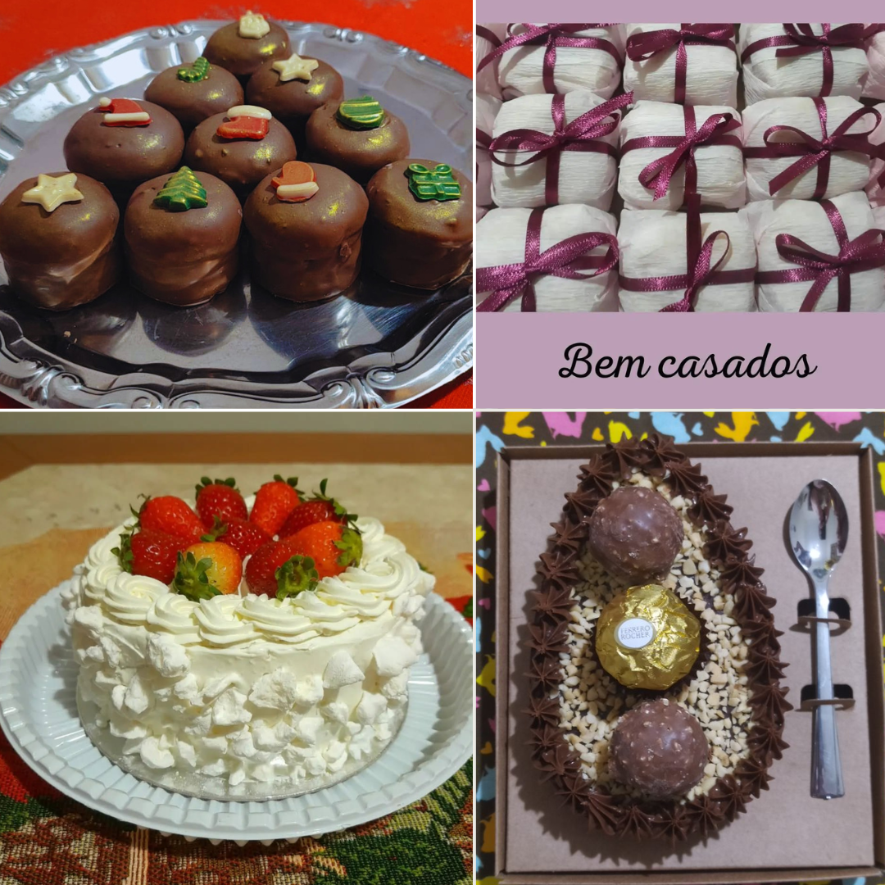

Nossa História
A história da Rosendo's Delícias Artesanais começou de forma muito especial: dentro de casa. O que era apenas um doce tradicional de família, feito com carinho para as sobremesas de domingo, logo começou a conquistar o coração (e o paladar) dos amigos e parentes mais próximos. Com o aumento dos pedidos, Rita transformou essa paixão em um negócio de verdade.
Mas a confeitaria é um dom de família! Para atender aos pedidos dos nossos clientes, o cardápio cresceu com a dedicação de Mariana (filha da Rita). Hoje, duas gerações trabalham juntas para oferecer também bolos sob encomenda, ovos de colher maravilhosos na Páscoa e uma linha completa de docinhos para festas, incluindo bem-casados, brigadeiros, beijinhos entre outros.

Sobre o Projeto Acadêmico
Este site foi desenvolvido como requisito para a Atividade Somativa 1 da disciplina de Fundamentos de Programação Web do curso de Análise e Desenvolvimento de Sistemas (PUCPR), 2° Periodo.
Autor: Michel Urban Rosendo de Lima
Tecnologias Utilizadas:
- HTML5: Utilizado para a estruturação semântica do conteúdo (uso de tags como
<header>,<nav>,<main>e formulários). - CSS3: Aplicado através de um arquivo externo centralizado (
style.css) para a padronização visual, criação de layout em Grid e responsividade básica das imagens. - JavaScript: Implementado de forma assíncrona para adicionar dinamicidade, validando as regras de negócio no formulário (exigência de observações para o sabor misto) e processando a recepção de dados via método GET para geração do recibo.